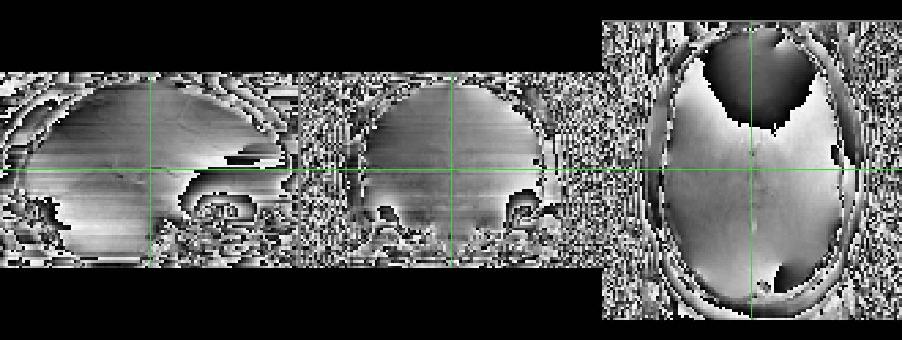
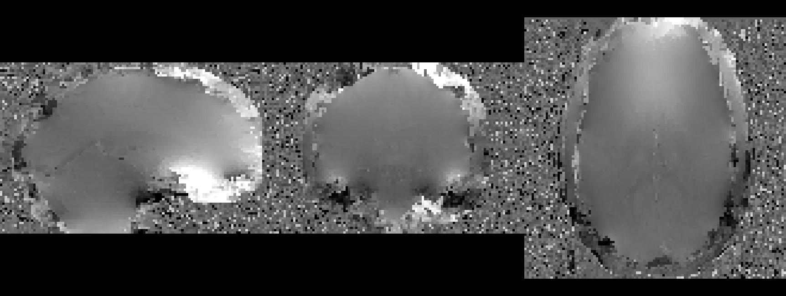
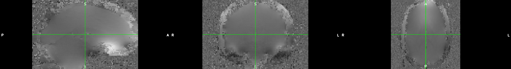
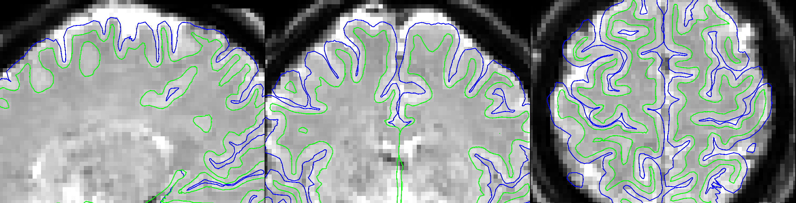
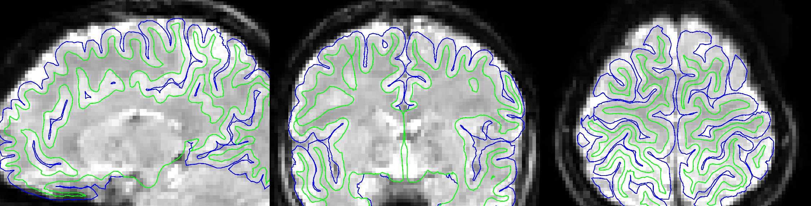
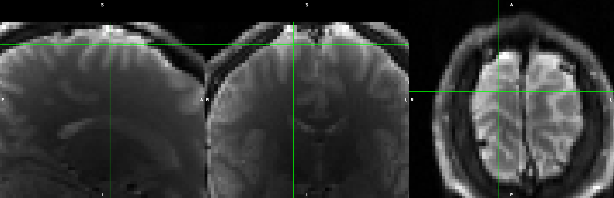
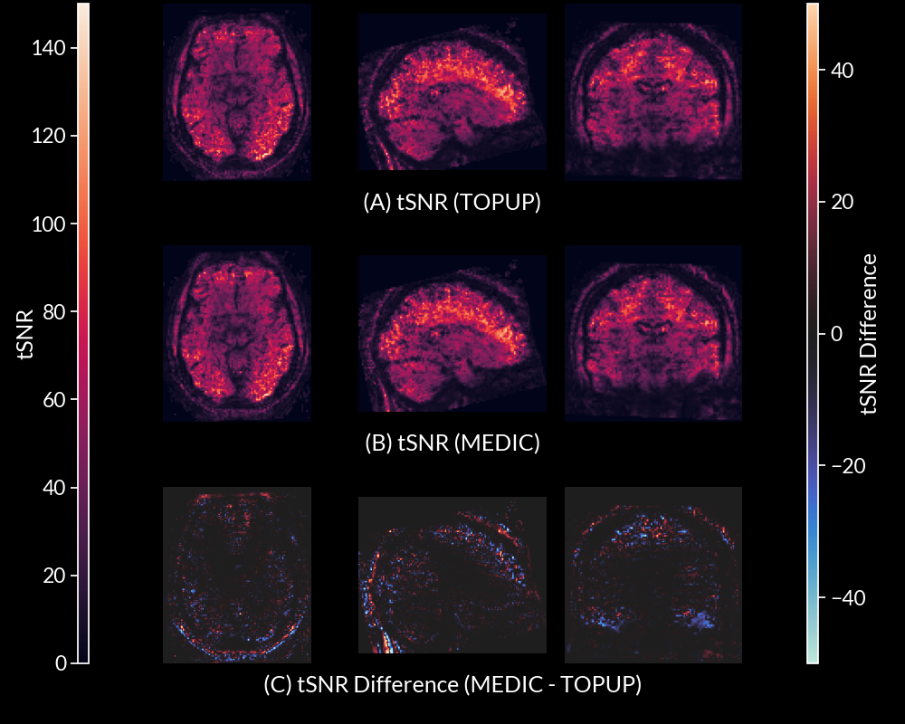
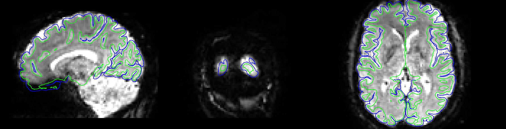

The inhomogeneity term is a spatially varying phase roll, which has
the following effect on the signal (assuming readout direction x and
phase-encoding direction y):
where $\tau_{dwell}$ is the time between k-space samples and
$\tau_{readout}$ is the time between the first and last echoes of the
readout train. Since $\tau_{dwell}$ is very small, distortion in readout
is negligible, but $\tau_{readout}$ is large enough to see significant
distortion in phase encoding direction.
An example
Simulation of distortion effects caused
by B0 inhomogeneities.
Correcting for distortion caused by B0 inhomogeneities
Correcting distortion requires measuring $\gamma \Delta B_0(x,y)$
(i.e. field map).
Two approaches:
Phase Difference
PEpolar
The Multi-Echo
DIstortion Correction (MEDIC)
algorithm uses the phase difference approach.
Some Background on MEDIC
What is MEDIC?
MEDIC is an algorithm that extracts field maps from the phase
information of multi-echo EPI data. This removes the need for a separate
field map acquisition:
Example of Reverse Phase Encode
Acquisition. Field mapping is done before/after a BOLD run.
In MEDIC, field maps are computed from
the phase information of ME-EPI, which allows for measurement of the
field frame-to-frame.
Relationship between echo time, phase and the field map
The slope of the relationship between phase and echo time is the
field map:
$$\phi(x,y) = \gamma \Delta B_0(x,y) t_{echo}$$
For $n$ echoes, we want to find $\gamma \Delta B_0(x,y)$ that
satisfies the equation:
Raw phase measurements collected off the scanner are wrapped between
$-\pi$ and $\pi$:

Wrapped phase from 1st echo of ME-EPI
data.
Practical Issue 2: Phase offsets
The linear model assumes phase $\phi(x,y) = 0$ if $t = 0$. This is
not true in practice due to off-resonance effects in the receiver coils.
A more realistic model would be:
From the perspective of phase, there is no difference between a phase
value of $\phi$ and some $2\pi$ multiple offset of it (i.e. $\phi + 2\pi
N$). This means that there is no unique solution to the above
equation.
Assumptions
To solve these issues, we make the following assumptions:
The phase is spatially smooth.
Phase evolves linearly with time.
The global accumulation of phase at the 1st echo is low (more
specifically between $[-\pi, \pi]$).
Frames with similar head positions have similar unwrapped phase
values.
How does MEDIC work?
Step 1: Correcting phase offsets and unwrapping
Two algorithms:
Multi-Channel
Phase C8ombination using measured
3D phase offsets, Simplified
(MCPC-3D-S): For phase offset correction
Rapid Opensource
Minimum spanning treE
algOrithm (ROMEO): For phase unwrapping
Step 1a: Phase offset correction using MCPC-3D-S
MCPC-3D-S removes phase offsets through estimating an unwrapped phase
difference between 1st and 2nd echoes and predicting the phase offset
(assuming linear phase evolution).
Without phase offset correction, phase
unwrapping cannot find consistent solutions
Computed phase offset which are removed
from all echos
Phase Unwrapping after phase offset
correction
Step 1b: Phase unwrapping using ROMEO
ROMEO unwraps phase through a path based unwrapping algorithm
(Prim-Jarník algorithm). The path is detemined through several quality
metrics, all based around varying smoothness criterion on the
values/gradients of the phase/magnitude images. ROMEO imposes a linear
constraint on the unwrapping solutions of phase across echoes.
Echo 1 Wrapped (14.2 ms)
Echo 1 Unwrapped (14.2 ms)
Echo 2 Wrapped (38.93 ms)
Echo 2 Unwrapped (38.93 ms)
Echo 3 Wrapped (63.66 ms)
Echo 3 Unwrapped (63.66 ms)
Echo 4 Wrapped (88.39 ms)
Echo 4 Unwrapped (88.39 ms)
Echo 5 Wrapped (113.12 ms)

Echo 5 Unwrapped (113.12 ms)
Phase unwrapping solutions for each echo.
Step 2: Global mode offset correction (GMOC)
As previously mentioned, unwrapping solutions are non-unique. We can
force uniqueness by assuming that the modal global accumulation of phase
at the first echo is within the range $-\pi$ and $\pi$, then imposing a
linear constraint for all subsequent echoes to find the unique
solution.
Example of unwrapping solutions settling
on $2\pi$ offset away from other solutions.
Bad solution in question.

After Global mode offset
correction.
Step 3: Temporal Correction
GMOC fixes most unwrap errors, but operates globally (all voxels).
Local errors are fixed by Temporal Correction.
For each TR, compare the phase unwrapping solutions for TRs where the
head is positioned similarly (Correlational Similarity of >0.98).
Then for each voxel, compute any $2\pi$ multiple offsets that would make
the phase unwrapping solutions close to the mean.
Example of unwrapping solutions settling
on $2\pi$ offset away from other solutions.
This step has the greatest effect for voxels where SNR is low.
Step 4: Computing the field map
The field map is computed by using weighted least squares:
To remove temporal noise components, an SVD filtering step is applied
to the field map (voxels x time) and small singular values from the data
are removed.
Step 6: Inverting the field map
Field maps computed on ME-EPI data are in the distorted space, so we
must invert the field map to get it into the undistorted space:
The field map is converted into a displacement field, then the ITK
library InvertDisplacementFieldImageFilter is used to
invert the field. The inverted displacement field is then converted back
into a field map.
MEDIC correction has greater correspondence to cortical anatomy than
PEpolar correction

UPenn: MEDIC corrected
UPenn: PEpolar (TOPUP)
corrected
MSC: MEDIC corrected
MSC: PEpolar (TOPUP)
corrected
ASD/ADHD: MEDIC corrected

ASD/ADHD: PEpolar (TOPUP)
corrected
MEDIC correction has greater correspondence to anatomy than PEpolar
correction
Global alignment metrics (whole brain) for ASD/ADHD Dataset. ✅
indicates best metric that was statistically significant (p < 0.05).
Correlation metric is the Pearson correlation between the functional and
anatomical data. Grad. Corr. is the Pearson correlation between the
gradient of the functional and anatomical data. Norm. MI is the
normalized mutual information between the functional and anatomical
data.
Metric
MEDIC
TOPUP
t-stat
p-value
df
T1w Correlation
✅0.412 (0.052)
0.403 (0.052)
15.430
< 0.001
182
T2w Correlation
0.710 (0.025)
0.711 (0.030)
-0.991
0.323
182
T1w Grad. Corr.
✅0.432 (0.040)
0.417 (0.039)
8.526
< 0.001
182
T2w Grad. Corr.
0.667 (0.034)
0.664 (0.055)
1.184
0.238
182
T1w Norm. MI
✅0.081 (0.006)
0.079 (0.006)
11.146
< 0.001
182
T2w Norm. MI
✅0.099 (0.007)
0.098 (0.008)
4.018
< 0.001
182
Local alignment metrics (whole brain) for ASD/ADHD Dataset. ✅
indicates best metric that was statistically significant (p < 0.05).
Spotlight analysis was performed by computing the average local
correlation between the functional and anatomical images across all
voxels within a 3 voxel sphere.
Metric
MEDIC
TOPUP
t-stat
p-value
df
T1w Spotlight
✅0.347 (0.019)
0.340 (0.019)
9.031
< 0.001
182
T2w Spotlight
✅0.521 (0.035)
0.514 (0.044)
4.329
< 0.001
182
Task based metrics for ASD/ADHD Dataset. ✅ indicates best metric
that was statistically significant (p < 0.05). Each metric examined
the separability of tissue types using anatomical segmentation labels
applied to functional data. Separability was measured by thresholding
the functional data along the tissue boundary, comparing the
classification against the anatomical segmenation, and computing the AUC
of the resulting ROC curve.
Metric
MEDIC
TOPUP
t-stat
p-value
df
Brain/Exterior
✅0.754 (0.034)
0.748 (0.032)
12.265
< 0.001
182
Gray/White
✅0.689 (0.034)
0.686 (0.037)
3.461
< 0.001
182
Ventricle/White
0.837 (0.056)
0.835 (0.059)
1.473
0.142
182
Field Map Comparison
If the MEDIC field map is able to more accurately measure field
inhomogeneities (due to greater correspondence to anatomy), where does
the error in the PEpolar method come from? Two possibilities:
PEpolar method fails to accurately capture the true field map.
Functional data contains other off-resonance effects that are not
captured by the PEpolar field map
How to distinguish the two? Compare against a 3rd field map
method.
Comparison of Field Map from FLASH
(ROMEO), PEpolar EPI (TOPUP), and ME-EPI (MEDIC) data.
Comparison of ME-EPI data to GRE PEpolar field map shows additional
off-resonance effects in ME-EPI data.

Spin Echo PEpolar Image
(UPenn)
Comparison of ME-EPI data to GRE PEpolar field map shows additional
off-resonance effects in ME-EPI data.
Gradient Echo PEpolar Image
(UPenn)
Comparison of ME-EPI data to GRE PEpolar field map shows additional
off-resonance effects in ME-EPI data.
ME-EPI Image, 1st Echo
(UPenn)
tSNR Comparison

tSNR comparison between TOPUP and MEDIC
(MSC).
In ASD/ADHD dataset, tSNR was not significantly different between
MEDIC and TOPUP corrected data.
Metric
MEDIC
TOPUP
t-stat
p-value
df
tSNR
38.993 (16.130)
39.345 (16.166)
-1.747
0.082
182
MEDIC can measure field changes due to head position.
-X Rotation
+X Rotation
-Y Rotation
+Y Rotation
-Z Rotation
+Z Rotation
-Z Translation
MEDIC corrections account for head motion effects.
Rotation +Y: MEDIC Corrected
Rotation +Y: PEpolar (TOPUP)
Corrected
Rotation -Z: MEDIC Corrected
Rotation -Z: PEpolar (TOPUP)
Corrected
Rotation +Z: MEDIC Corrected

Rotation +Z: PEpolar (TOPUP)
Corrected
Conclusions
MEDIC provides superior distortion correction performance over
PEpolar (i.e. TOPUP) method.
Mainly driven by more accurate accounting of field
inhomogeneities.
MEDIC field maps are coupled in space and time to functional data.
No need for co-registeration of field map to functional data.
Removes separate sequence for field map acquisition.
Can account for field changes due to head motion.
Algorithmic Limitations
Suffers from same limitation as phase difference field map methods
Requires accurate measurement of phase at two echoes, but areas of
very high susceptibility have significant signal loss at later echo
times.
Study limitations
Only tested on a single ME-EPI protocol
Future work
Test on other ME-EPI protocols as more ME-EPI datasets become
available.
Modified MEDIC for Bipolar ME acquisitions can allow reduction in
time between echoes.